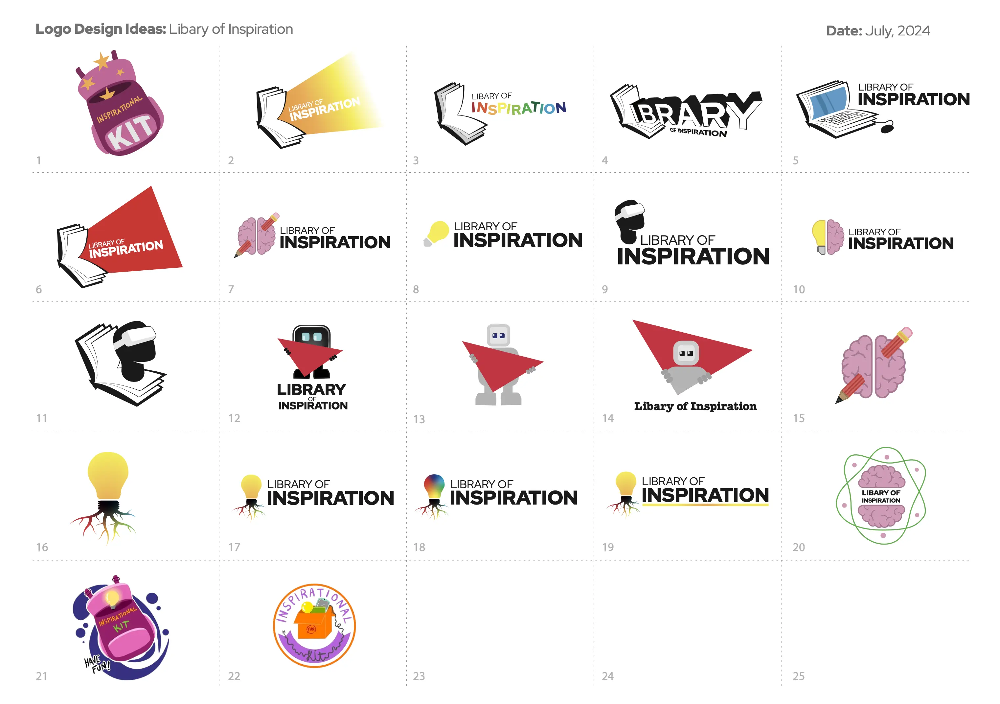
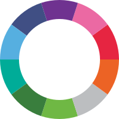
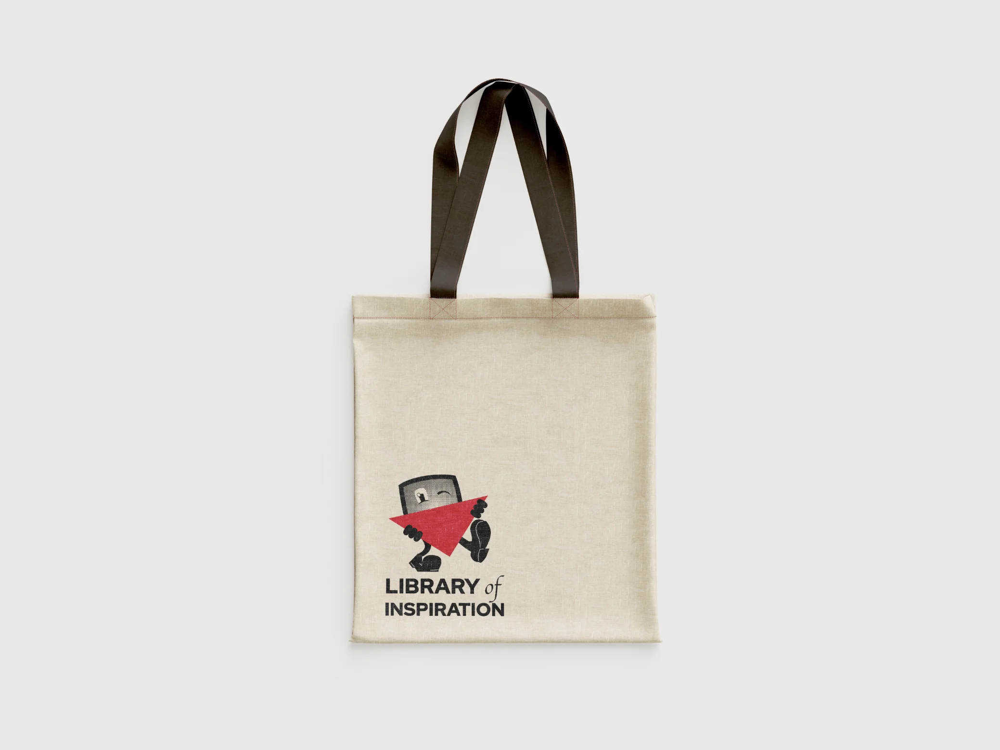

Corporate Design:
The biggest Challenge, but at the same time also one of the most important aspect of the project, was to unify the appearance of all 10 Kits, Content, Symbols, etc; so the Audience would identify each Kit as part of LOI. It also should help the staff that would work with the Kits at High-Schools to make sense of what belongs where.
Target Group:
Girls, young carers and children from other backgrounds who are underrepresented Engineering (Age 12-13 Y.O)

Logo Draft:
To involve the creative nature of the target group, school children have been asked to create visuals to the Name of the Project. These logos have been included to draft the different logo ideas
Decision by vote:
15 People have been working on LOI, and everybody did get a voice on what logo they thought would be the best representation for the Project. Winner was the stylised small fella that was inspired by the Emo Robot used in on of the Kits. It is a fun Logo for Kids, memorable and was usable for all the different Kits.
Personal Favorit:
My personal favorit design was the Bulp-Tree Logo and for good reasons:



Color Scheme
In addition to the combined word and imagerative mark, a primarily Image brand has been created. This decision was made as the Client wanted to be able to present the full title of the 'Organisation' with the Logo. This wouldn't have been able with the main logo without overloading it as it happened with the old version.

Screenprint Adjustments:
At the end of the project, the Logo also needed be adjusted to fit project specific requirements. Most notable, it needed to be printable with Screen Print and 2 colours to fit onto tote bags

Motion Graphic:
For the Social Media as well as well for generall use a small and simple Logo Animation was created!